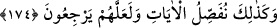

yetiremedik. Dolayısıyla mecbûri olarak onlara uyduk. “(Gerçekleri) iptal edenlerin”
bizi yoldan çıkaran babalarımızın suçlu oldukları ortaya çıktıktan sonra onların
“yaptıkları yüzünden” biz de akıl yoluyla gerçeği araştırıp bulmaktan âciz olduğumuz
belli olduktan sonra “bizi” hesaba çekip “helâk mi ediyorsun?” demeyesiniz diye”
sizin Rabb’iniz olduğum hakkında sizleri şâhit tutmuştum.
İnsanların yukarıda zikredilen kâmil yetenekleri, böyle diyerek özür dileme kapısını
kapatır. Çünkü, deliller ortaya konduktan ve bu delillerle istidlâl edebilme kuvveti
verildikten sonra taklîde devam etmek aslâ câiz olmaz.
174. Belki inkârdan dönerler diye ayetleri böyle ayrıntılı bir şekilde açıklıyoruz.
“İşte biz” anılan “ayetleri böyle” yani büyük faydalar temin edecek şekilde beliğ
olarak “açıklıyoruz, artık herhalde dönerler.” üzerinde bulundukları bâtılda ısrardan
ve atalarını taklîdden dönsünler.
Diğer bir mânâya göre: “İşte biz ayetleri böyle açıklıyoruz ki onlarda bulunan emir ve
yasakları öğrensinler ve üzerinde bulundukları yanlış yoldan dönsünler...”
Âlimlerin
çoğu
önceki
ayette
zikredilen
mukavelenin
hakikat
olduğunu
savunmuşlardır. Çünkü İbn Abbas (r.a.)’dan rivayete göre: Allah Teâlâ, Âdem (a.s.)’ı
yaratınca onun sırtını sıvazladı ve ondan kıyamete kadar yaratacağı bütün insanları
çıkardı ve onlara: “Ben sizin Rabb’iniz değil miyim?” diye sordu. Onlar da: “Evet,
Sen bizim Rabb’imizsin.” dediler. O gün: “Artık kalem kıyamete kadar olacak şeyleri
yazdı ve kurudu.” diye nida olundu.[111]
Hz. Ömer (r.a.)’a bu ayetten sorulunca şöyle dedi: “Rasûlullah (s.a.v.)’e bu ayet
hakkında sorulduğunda şöyle buyurduklarını işittim:
“Allah Teâlâ, Âdem (a.s.)’ı yarattı, sonra sağ eliyle sırtını sıvazladı ve ondan bir
nesil çıkardı. Allah Teâlâ buyurdu ki: “İşte bunları cennet için yarattım. Bunlar,
cennet ehlinin amelini işlerler.” Sonra Âdem (a.s.)’ın sırtını bir daha sıvazladı ve
ondan diğer bir nesil çıkardı. Bunun üzerine buyurdu ki: “İşte bunları da ateş için
yarattım. Bunlar da ateş ehlinin amelini işlerler.” Bir adam:
“Yâ Rasûlallah, bu amel hangi konudadır?” diye sordu. Rasûlullah (s.a.v.) buyurdu ki:
“Allah Teâlâ, bir kulu cennet için yaratınca o kimseye cennet ehlinin amellerini
işletir. Nihayet o, cennet ehlinin amellerinden birinin amelini işlerken can verir.
Allah Teâlâ da bu amel sebebiyle onu cennete sokar. Bir kulu da cehennem için
yaratınca ona cehennem ehlinin amellerini yaptırır. Nihayet o kimse, cehennem
ehlinin amellerinden birini yaparken ruhunu teslim eder. Allah Teâlâ da, yaptığı bu
kötü amel sebebiyle onu cehenneme sokar.”[112]
Hadiste geçen ifadelerden, Allah Teâlâ’nın bütün insanları bizzat Âdem (a.s.)’ın